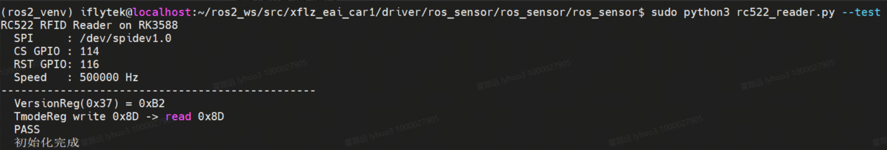
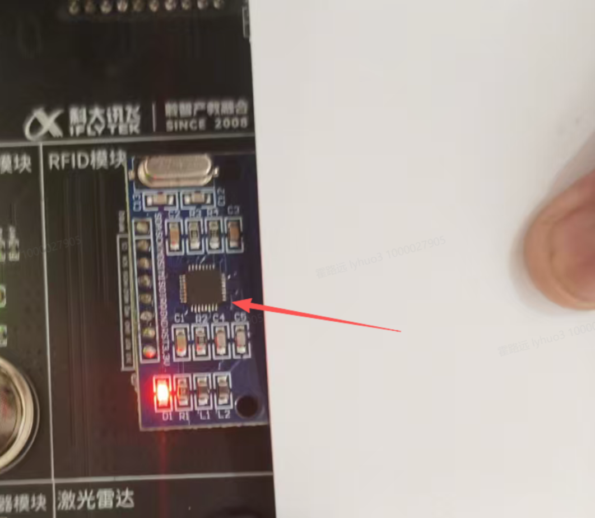
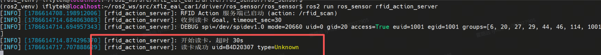

动作通信：等刷卡这件事交给 Action
动作（Action）= 服务的同步语义 + 话题的持续流：Goal 发出立即返回，服务端边执行边发 Feedback，完成后回 Result，全程可取消。本课以 RFID 读卡为载体讲透三通道。
01问题引入：等刷卡把服务"等崩了"
02核心原理：三通道各管什么
携带任务参数（timeout_sec: 30）。发送后可先拿到"接受/拒绝"的答复（goal_response），再等最终结果。
执行期间周期推送状态：SCANNING → CARD_FOUND → READING_UID → VERIFYING。
终态交付：success / card_uid / card_type / message。
服务端在循环里查 is_cancel_requested，同意则就地收场回 canceled。
| 维度 | 话题（EXP-06） | 服务（EXP-07） | 动作（本课） |
|---|---|---|---|
| 调用语义 | 持续数据流，一对多 | 单次请求/响应，一对一 | 长耗时目标+反馈+结果 |
| 异步/同步 | 异步 | 同步 | 异步（执行后台化） |
| 中间反馈 | 无（值到即反馈） | 无 | 有（Feedback 状态机） |
| 可取消 | 否 | 否 | 是 |
| 典型场景 | MQ5 浓度发布 | 指纹验证 | 刷卡等待、导航、抓取 |
03动画：一次完整 Action 生命周期
Goal 立回、Feedback 流式、Result 一次性、Cancel 随时插队——四条时序合成一个"像打电话又像看下载进度条"的抽象。
04专题：服务端三回调与状态反馈机
在 execute 之前被调：默认 ACCEPT，可拒绝（如已有任务在跑）。
决定 cancel 请求的 ACCEPT/REJECT；同意后 execute 内的 is_cancel_requested 才会置位。
任务全程在此：循环查取消、发反馈、推进状态机、以 succeed/abort/canceled 收尾并 return result。
# 读卡状态反馈机（真实流转） SCANNING ← request_a() 寻卡未果，sleep(0.1) 继续 ↓ 卡进入射频场，拿到 ATQA CARD_FOUND ← anticoll() 防冲突（0x93 0x20 读 4 字节 UID + 异或校验） ↓ UID 读出 READING_UID ← 拼接 hex uid_str ↓ VERIFYING ← classify_card(atqa, uid) 判型（Classic/Ultralight/DESFire…） ↓ deadline 前完成 succeed() → Result{success, card_uid, card_type, message}
| 易错点 | 为什么 |
|---|---|
execute 必须 async def | 动作执行体是协程，同步函数无法正确挂起/恢复 |
| 取消检查必须在循环体内 | 循环外检查 = 只看一次，任务起跑后再也收不到取消令 |
| 结果状态要查 STATUS_SUCCEEDED | 超时/取消对应其它状态码，直接当成功会误报 |
| 一次只发一个 Goal | 多 Goal 并发抢同一 SPI 天线会造成读卡竞争 |
05交互：任务调度沙盘
06动作代码精讲：服务端三件套 + 客户端回调链
# ── 服务端 rfid_action_server.py（节选）── self._action_server = ActionServer( self, RfidScan, 'rfid_scan', execute_callback=self.execute_cb, goal_callback=self.goal_cb, # 收/拒目标 cancel_callback=self.cancel_cb) # 同意/拒绝取消 async def execute_cb(self, goal_handle): deadline = time.time() + (goal_handle.request.timeout_sec or 30) while time.time() < deadline: if goal_handle.is_cancel_requested: # ← 必须在循环内 goal_handle.canceled(); result.message = '已取消'; return result fb = RfidScan.Feedback(); fb.status = 'SCANNING' goal_handle.publish_feedback(fb) ok, atqa = rc.request_a() if not ok: time.sleep(0.1); continue ... # CARD_FOUND → READING_UID → VERIFYING goal_handle.succeed(); return result # 超时走到这前请 abort()
# ── 客户端 rfid_action_client.py（回调链节选）── if not self._client.wait_for_server(timeout_sec=3.0): return False goal = RfidScan.Goal(); goal.timeout_sec = timeout future = self._client.send_goal_async(goal, feedback_callback=self.feedback_cb) future.add_done_callback(self.goal_response_cb) # 第 1 环：接受？ while rclpy.ok() and not self._done: # 必须轮转执行器！ rclpy.spin_once(self, timeout_sec=0.1)
07实操：自检硬件 → 跑通读卡
cd ~/ros2_ws && source /opt/ros/humble/setup.bash colcon build --symlink-install --packages-select ros_sensor ros_sensor_interfaces source install/setup.bash # 脱机自检（失败=查 SPI 接线 CS114/RST116 与 3.3V 供电） sudo python3 src/.../ros_sensor/rc522_reader.py --test # VersionReg 正常值非 0x00/0xFF # 终端 A ros2 run ros_sensor rfid_action_server # 终端 B ros2 run ros_sensor rfid_action_client 30 # → Goal 已接受 → Feedback: SCANNING… → 结果: success=True uid=7E1A3B02
08实操：CLI 观察反馈流与三种结局
# 终端 C：完整观察反馈（不写客户端也能看三通道） ros2 action list ros2 action info /rfid_scan ros2 action send_goal /rfid_scan ros_sensor_interfaces/action/RfidScan \ "{timeout_sec: 30}" --feedback # Feedback: SCANNING ← 逐条滚动（不放卡就一直刷） # 放卡后 → Feedback: CARD_FOUND / READING_UID / VERIFYING # Result: success=True uid=… type=MIFARE Classic msg=读卡成功 # 体验「结局 2 · 超时 abort」：故意不放卡，30s 后… # 体验「结局 3 · 取消」：send_goal 起后按 Ctrl+C 触发 cancel（或代码里 cancel_goal_async）
对照记忆点：--feedback 是动作与服务最直观的分界线——服务 call 出来只有最终一行，动作能看到整条状态流。Goal YAML 字段必须与 .action 一致（是 timeout_sec 不是 timeout），详见面板走上 EXP-09 的接口定义。
📸 指导书实操与现象截图（3 图）



09注意事项与验收清单
- 能画出 Goal/Feedback/Result/Cancel 四条通道并标方向
- 说出三回调各管什么、execute 为什么必须 async
- 复现反馈流转：SCANNING → CARD_FOUND → READING_UID → VERIFYING
- 用
--feedback观察到反馈流并成功拿到 Result - 分别演示超时（不放卡）与取消两种非成功结局
- 能完成三机制选型表，说出"服务无法取消"对体验的影响
- 理解 REQA 寻卡与 AntiCollision 防冲突的先后关系
| 坑 | 症状 | 解法 |
|---|---|---|
| SPI 自检失败 | VersionReg=0x00/0xFF | 查 CS=114/RST=116 接线、3.3V 供电、python-periphery 是否安装 |
| 服务不可用 | 客户端报 RFID Action 服务不可用 | 先启动 server，ros2 action list 确认 /rfid_scan |
| 一直 SCANNING | 反馈不前进 | 卡贴天线；确认是 13.56MHz 卡型；必要时加大 timeout_sec |
| Goal 字段写错 | YAML 解析失败 | 字段名必须与 .action 完全一致：{timeout_sec: 30} |
| 取消不生效 | cancel 后任务照跑 | 检查 execute 循环体内是否有 is_cancel_requested |
| 多 Goal 抢卡 | 读卡结果错乱 | 一次只允许一个客户端发 Goal |
10本课总结与思考题
Goal 立回、 Feedback 流式、Result 一次性，长耗时任务的标准形态。
goal/cancel 决定准入，async execute 内查取消、发反馈、三种结局收尾。
goal_response → result 两环接力，feedback 中途插播，spin 贯穿始终。
先 ATQA 确认在场、再取唯一卡号——顺序不可颠倒；自检先行分层排障。
② 当前读卡 succeed 后动作即结束，无法感知"卡被拿走"——要设计持续监控卡在/离场的门禁，对比"动作+长循环反馈"与"话题持续发布"两种方案并给出你的选型。
③ execute_cb 里的 time.sleep(0.1) 轮询和 async 协程是否冲突？如果用 await asyncio.sleep 替换，对 cancel 的响应速度有何影响？